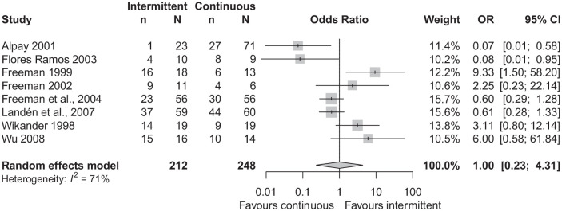
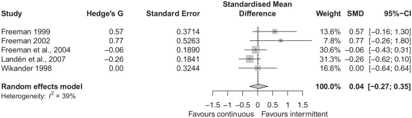

Página 8 · Síndrome pré-menstrual e síndrome disfórica pré-menstrual
O mês inteiro ou só a metade que dói: por que as duas formas funcionam
Todos os dias do mês
Uma paciente toma a dose nos 28 dias do ciclo.
Só na segunda metade
A outra toma apenas na fase lútea, dos dias 15 a 28.
As duas melhoram, e a evidência disponível não consegue separar as duas estratégias por eficácia. Como é que isso é possível?
Onde a conversa não basta
Nas pacientes com sintomas psíquicos de maior repercussão na qualidade de vida e naquelas com quadro marcado de síndrome disfórica pré-menstrual, não basta fazer psicoterapia — é preciso terapêutica medicamentosa. Isso não desqualifica a abordagem psicossocial: a terapia cognitivo-comportamental tem recomendação forte e mantém melhor o efeito no longo prazo. O que a prática mostra é que, no quadro grave, a conversa isolada não dá conta do tamanho do prejuízo — a abordagem é multimodal, associando as duas.
A classe — e o que “inibir a recaptação” significa
A classe é a dos inibidores de recaptação de serotonina, e vale abrir o nome, porque ele descreve o mecanismo. Depois de liberada na fenda sináptica, a serotonina é recolhida de volta para o neurônio pré-sináptico por um transportador — é a recaptação, o mecanismo natural de encerrar o sinal. Inibir esse transportador significa deixar mais serotonina disponível na fenda, por mais tempo. Como a disfunção do sistema serotoninérgico é uma das duas teorias centrais da fisiopatologia, essa é a droga que ataca o mediador de destaque. Entre os agentes, três têm aprovação regulatória específica para o transtorno disfórico: fluoxetina, sertralina e paroxetina — e a fluoxetina é a que aparece nominalmente nas questões. Na hierarquia das diretrizes, os inibidores de recaptação para sintomas afetivos recebem recomendação forte.
Três esquemas, não dois
O primeiro esquema é a administração contínua — dose todos os dias do ciclo. O segundo é a administração intermitente, na fase lútea: é a metade do ciclo em que os sintomas vivem, e por isso o esquema intermitente cobre exatamente a janela, tipicamente do dia 15 ao dia 28, terminando com o início do fluxo. E há um terceiro esquema, menos lembrado e igualmente recomendado: a dosagem a partir do início dos sintomas até o começo da menstruação — útil justamente para quem não tem ciclos suficientemente previsíveis para marcar o dia 15 no calendário. As duas diretrizes vigentes são explícitas — ACOG Clinical Practice Guideline nº 7 (dez/2023) e RCOG Green-top nº 48, 2ª edição (fev/2017): os inibidores de recaptação podem ser administrados de forma contínua ou intermitente (na fase lútea ou do início dos sintomas até a menstruação), e a evidência disponível sugere eficácia comparável entre contínuo e intermitente.
O esquema intermitente é definido pela fase do ciclo — a segunda metade está mapeada em A Linha do Ciclo.
Os três esquemas sobre o mesmo ciclo
toque em cada faixaCada quadrado é um dia; os dias marcados são os dias com dose. A linha vermelha à direita é o 1º dia do fluxo, onde as três terminam.
As três modalidades são válidas: a eficácia é comparável, e a escolha se faz por tolerabilidade, adesão e previsibilidade do ciclo.
Como escolher entre eles
Se a eficácia é comparável, o que decide é outra coisa — e é aqui que o aluno avançado se separa. O intermitente tem a vantagem de reduzir o risco de efeitos adversos e de sintomas de descontinuação, além de expor a paciente à droga por metade do tempo. O contínuo é a saída quando o intermitente falha (trocar de intermitente para contínuo é conduta recomendada na resistência ao tratamento) e serve melhor a quem tem dificuldade de aderir a um esquema por fases ou ciclos irregulares. Há ainda uma diferença prática de manejo: o esquema contínuo exige retirada gradual; o de fase lútea em dose baixa não exige. A escolha se faz por tolerabilidade, adesão e previsibilidade do ciclo.
O arco fecha: serotonina → triptofano → inibidor de recaptação
Há um único fio fisiopatológico com tradução terapêutica atravessando todo o tema. A serotonina é o mediador de destaque na etiologia; o triptofano, seu precursor, é estimulado na dieta; o inibidor de recaptação de serotonina é a droga do tratamento. Três momentos, um alvo só — e é por isso que a orientação do cacau, que soava simpática, e a prescrição de fluoxetina, que soa pesada, atacam a mesma via em intensidades diferentes.

A — taxa de resposta clínica: OR 1,00; IC95% 0,23–4,31 (8 ensaios)
B — mudança nos escores de sintomas: SMD 0,04; IC95% −0,27 a 0,35 (5 ensaios)Em oito ensaios randomizados, a taxa de resposta não diferiu significativamente entre o inibidor de recaptação administrado apenas na fase lútea e o uso contínuo (A); em cinco ensaios, a mudança nos escores sintomáticos também foi semelhante entre os esquemas (B). A revisão reuniu 460 participantes — 212 no esquema intermitente e 248 no contínuo —, com cinco estudos de transtorno disfórico e três de síndrome pré-menstrual grave; os agentes avaliados foram sertralina, citalopram e paroxetina. Em A, o achado está no diamante inferior centrado sobre a linha de nulidade; em B, o diamante permanece próximo de zero, indicando ausência de diferença detectável.
A leitura correta é "não foi demonstrada superioridade de um esquema", e não "equivalência definitivamente provada": o desfecho de resposta tem intervalo de confiança amplo, heterogeneidade de 71% e definições distintas de respondedor, com risco de viés moderado a alto em todos os estudos. E um cuidado de leitura que muda tudo: não é gráfico de inibidor de recaptação contra placebo — os dois braços receberam a droga. O que estas figuras comparam é exclusivamente o calendário de administração — que é justamente a decisão em jogo quando a droga já está indicada.
Figuras 2 e 4 de Reilly TJ, Wallman P, Clark I, Knox CL, Craig MC, Taylor D. Intermittent selective serotonin reuptake inhibitors for premenstrual syndromes: A systematic review and meta-analysis of randomised trials. Journal of Psychopharmacology. 2023;37(3):261–267. Licenciadas sob CC BY 4.0. Fonte: doi.org/10.1177/02698811221099645.
Quiz — fixação
Paciente com distúrbio disfórico de fase lútea. Qual medicação tem eficácia comprovada no tratamento?
- Gabarito A. "Distúrbio disfórico" nomeia o quadro mais grave e incapacitante, com sintomas específicos interferindo de forma importante nas relações interpessoais, nas profissionais e na qualidade de vida — o alvo é psíquico, e o alvo psíquico é do inibidor de recaptação de serotonina, contínuo ou intermitente.
- B. espironolactona é a rota do edema, dirigida à retenção hídrica; ela não atua no eixo afetivo.
- C. tamoxifeno pertence à rota da mastalgia, reservado aos extremos mais graves de dor mamária — alvo mamário, não psíquico.
- D. sumatriptano é o quarto degrau da rota da cefaleia, para crise aguda de enxaqueca mais grave; ser "agonista de receptores de serotonina" o aproxima do vocabulário, não da indicação.
- Por que cair na (D). o aluno reconhece "serotonina" no nome da classe e cola a droga ao mediador da doença — mas agonista de receptor 5-HT na crise migranosa e inibidor de recaptação no transtorno disfórico resolvem problemas diferentes. A pergunta que salva é sempre a mesma: qual sintoma-alvo o enunciado descreveu?
Qual medicação está indicada no tratamento da "tensão pré-menstrual com disforia"?
- Gabarito B. É preciso primeiro traduzir o enunciado: "tensão pré-menstrual com disforia" é a forma leiga de descrever a síndrome disfórica pré-menstrual — eixo psíquico, portanto inibidor de recaptação de serotonina.
- A. é o distrator mais bem construído da questão: a cabergolina é agonista dopaminérgico, pode ser cogitada na mastalgia mais grave e é usada na fase lútea — ou seja, ela combina com metade das palavras do enunciado, mas com o eixo errado.
- C. espironolactona ataca retenção hídrica; nada no enunciado aponta para edema.
- D. analgésico comum é o primeiro degrau da cefaleia; também não é o eixo descrito.
- Por que cair na (A). "fase lútea" e "pré-menstrual" ativam a memória do agonista dopaminérgico, e a droga menos óbvia parece a resposta mais elegante. O que a banca quer é o pareamento direto: eixo psíquico → fluoxetina; a droga que pisca é a que corresponde ao sintoma descrito, não a mais sofisticada da lista.
Sobra uma última camada, e ela não é clínica: é de linguagem. Metade das questões deste tema se decide na tradução do enunciado — e há um termo que não deve aparecer na resposta.